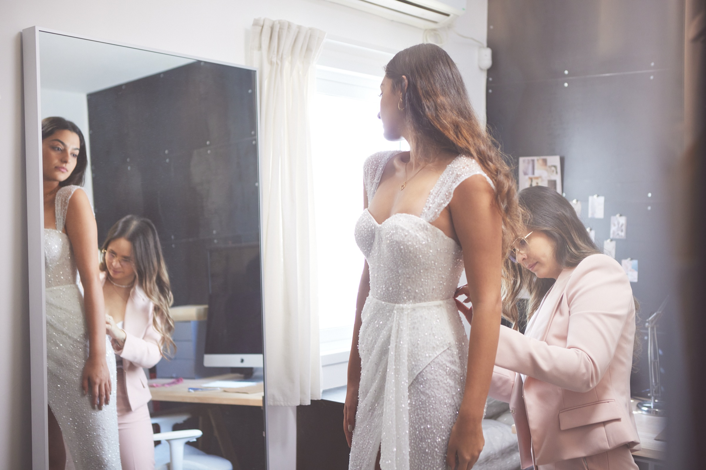

Your wedding day is the ultimate expression
of your personal story, your power, and your beauty.
Born in Argentina and relocating to Israel with her family at the tender age of three, Tati carried an unwavering certainty from her earliest days that the world of bridal fashion was her ultimate life's calling.
While other children explored the neighborhood playgrounds, Tati was drawn to a different kind of magic — fascinated by the architecture of fabrics, wandering past gallery windows, seeking inspiration in the timeless silhouette of spinning dresses.
Following her graduation from the prestigious Bezalel Academy of Arts and Design, this lifelong passion culminated in the founding of Tati — a brand born out of a deep love for high fashion, textile artistry, and uncompromising craftsmanship.
From the majestic presence of Marie Antoinette to the effortless allure of Marilyn Monroe, each gown is designed to make a definitive statement.
The Tati aesthetic is a sophisticated dialogue between art history and contemporary luxury. Drawing inspiration from classical periods, the opulence of the Rococo era, and the clean lines of modern art, the collections seamlessly blend regal silhouettes with a bold, unapologetic sensuality.
Every Tati creation is a custom masterpiece — meticulously handcrafted using high-end fabrications, precision tailoring, and innovative cutting techniques, engineered to flatter your unique silhouette with couture-level quality.
Operating from our flagship design studio, Tati caters to discerning brides and luxury bridal salons globally.

Let's create your moment together. We invite you to experience the intimate journey of premium bridal design, crafted with passion and delivered to brides dreaming worldwide.
Book an Appointment